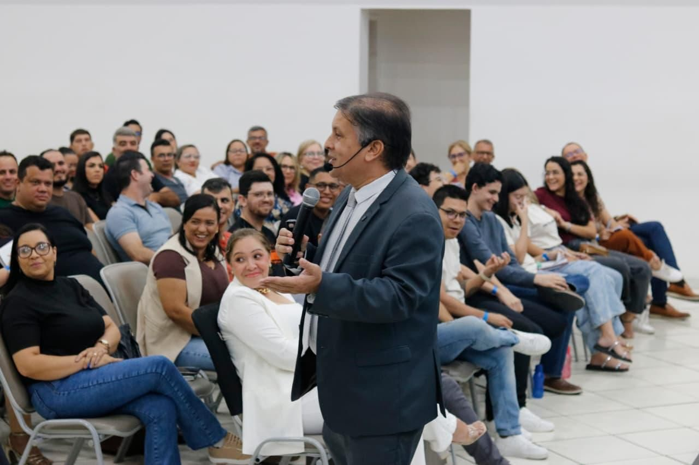
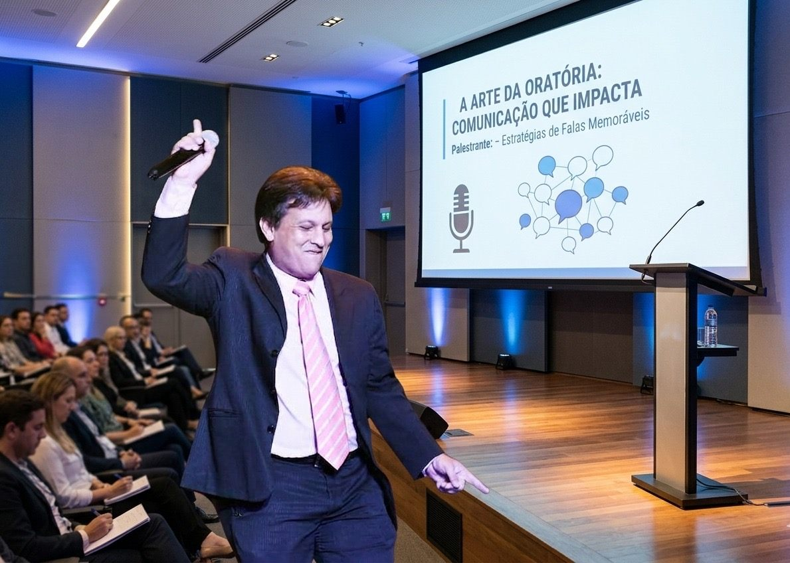
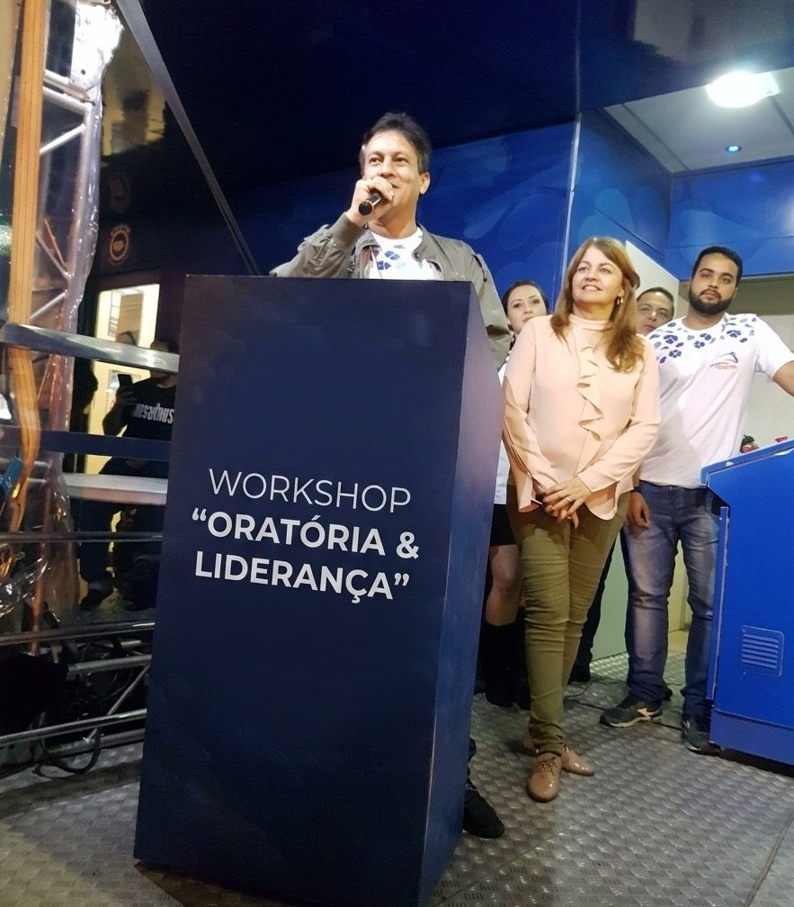

Segurança para falar em público
Sem decoreba e sem travar — mesmo sob pressão.
Quem conduz o workshop
Jornalista de carreira, Morib aprendeu no dia a dia da profissão o que decide se alguém escuta você ou não: clareza, tempo e credibilidade.
O workshop é esse método aplicado. Nada de fórmula decorada: você fala, treina, recebe orientação individual e ajusta na hora — com devolutiva de quem comunica profissionalmente todos os dias.
Morib no palco


A arte da oratória, no palco
Workshop “Oratória & Liderança”Para quem é
Cliente, aluno, equipe ou banca: se o seu resultado depende de como você fala, este workshop foi montado para você.
Vender a visão, negociar melhor, liderar o time.
Apresentações, defesas, entrevistas e seleções.
Aulas que prendem a atenção do início ao fim.
Reuniões, feedbacks e equipes que se movem.
Comunicar valor e fechar com confiança.
O método
Sem decoreba e sem travar — mesmo sob pressão.
Começo, meio, fim e um objetivo claro: convencer.
Voz, postura e gesto dizendo a mesma coisa que você.
Escuta ativa e leitura de quem está na sua frente.
A mesma mensagem, adaptada a cada contexto.
A fala como ferramenta de conduzir pessoas e decisões.

INTEGRA — A Nova Escola de Psicanálise
Este encontro é uma parceria entre Morib Macedo e a INTEGRA — A Nova Escola de Psicanálise, referência em desenvolvimento humano no Recife. E não é por acaso: comunicação é comportamento. Aprender a falar dentro de uma escola que estuda o comportamento humano muda o resultado — você treina, erra, ajusta e evolui em um ambiente pensado para isso.
Perguntas frequentes
Não. O método funciona tanto para quem trava na frente dos outros quanto para quem já apresenta e quer subir de nível. A prática respeita o momento de cada participante.
Na INTEGRA — A Nova Escola de Psicanálise, no Recife/PE. O encontro é 100% presencial. Data, horário e endereço completo são confirmados na inscrição pelo WhatsApp.
Pelo WhatsApp (81) 97326-8686. A equipe confirma os detalhes, as formas de pagamento e finaliza sua inscrição em poucos minutos.
Porque cada participante treina e recebe orientação individual do Morib. Turma pequena é condição do método — e por isso as vagas costumam se esgotar rápido.
Inscrições abertas
As vagas são poucas de propósito: turma pequena é o que garante prática individual e atenção de verdade a cada participante.
Ou chame direto: (81) 97326-8686
INTEGRA · Recife/PE — encontro presencial